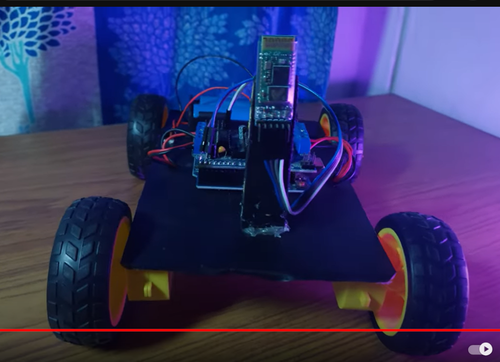
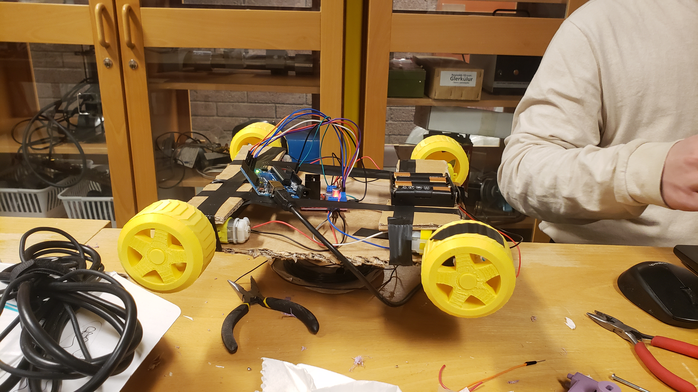
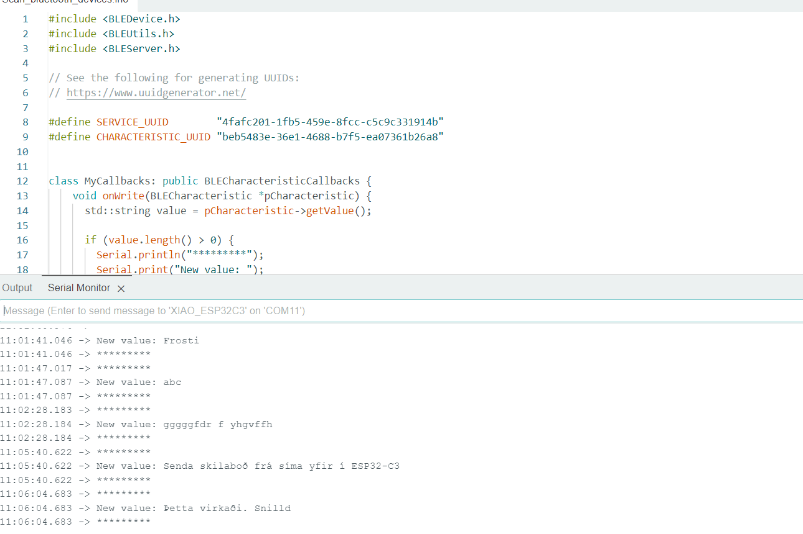
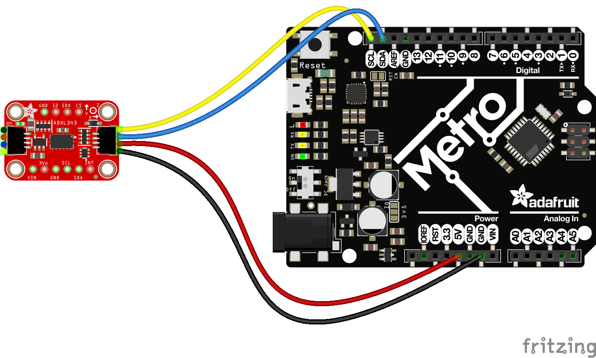

Final Project - Blue tooth car follower
Work in progress (last updated 24. april)

Project description
The goal of the project is to design a prototype of a car that follows a person via wireless connection (bt or simmilar). The car will be controlled with an app in your smartphone. There will be 2 settings, manual and automatic control. The manual control would be a simple control (forward, backwards, turn left, turn right, increase / decreese speed). We will be mainly focusing on the automatic control. An accelerometer will be used for tracking the position of the user and the car will mimmick / follow based on the accelerometer data.
Car race for best lap time
Testing useability of the car control.
Project management
Diary for the work done (click here)
List of things that need to be done:
- Car chassis (Ási)
- Wireless control (Frosti)
- Accelerometer (Frosti)
- Motors (Ási)
- Wheels (Ási)
- Mechanical steering (Ási)
- code (ChatGPT)
Hardware required
- Arduino Uno R4 WiFi
- 2 motors for driving
- 1 motor for steering
- Motor controllers
- Accelerometer
- Power suply
- Hook-up wires
Other components
- 3 or 4 wheels
- Chassis
- Axles
- Mechanical steering
Component selection
Micro controller: We used Arduino Uno and ESP32 for bluetooth connection. RasperryPI would probably be a better fit for bluetooth controlled car since it has a built in bluetooth module. We ended with Arduino Uno R4 WiFi which simplified the Bt / WiFi connection.Motors: Geared DC motors are usually better than steppers when it comes to traction drive of a robot. If you're going to use DC motors, you will probably need to find some that have encoders or navigation will be rather hit and miss at best. The inefficiency of steppers make them less than ideal for battery powered projects.
Motor controllers: Guide to selecting motor controllers for DC motors.: Voltage for DC motors can be anywhere between 50% of the "suggested voltage" but it is not reccomended to exceed it by more than 30%. A motor driver should have current that is rated 30 - 50% above the rated current for the DC motor.
Power supply: We used a 6V battery consisting of 4 1.5V batteries connected in series to power the motor controller. For the Arduino we used a power bank (most power banks are suitable for arduino since it needs simmilar power supply as most smart phones).
Acceleromter: We tried using an accelerometer for position control, It did not turn out well. In 60 secounds the calculated position of the car had shifted approximately 15m in x direction and 12m in y direction when the car was completely stationary.
Wheels: article on wheels for robotics. standard wheels for driving and omni wheels for idler is probably a good fit.
Chassis: The chassis was fairly simple, just 2 laser cut plates connected with 3D printed objects and other things. If we were to continue the project we would design a chassis that would protect vital parts from rain. We would also make special slots for electric components to be placed. If that would turn out well and GPS connection would work we would add a suspension system and scale the project up to make it more simmilar to a golf club trollies.
DC motors
 The code for DC motors can be found on github or just ask ChatGPT.
ESP32-C3 XIAO (was ment to be used for wireless connection)
I used this link https://wiki.seeedstudio.com/XIAO_ESP32C3_Getting_Started/ for tutorial.
First test: LED test, I started by testing if the ESP32 could make the LED light blink and it worked well (took only 5 minutes).
Second test: Bluetooth tutorial
Here you can see a screenshot of the messages sent from phone to ESP32-C3 via bluetooth connection.

Third test:
Interfacing Arduino Uno with ESP32.
This turned out to be quite complicated and we ended up switching to Arduino Uno R4 WiFi.
Arduino UNO R4 WiFi
Bluetooth documentation We will be using the Notify section for the accelerometer. The Central and Peripheral Devices gives a good explenation on how bluetooth connections work. Central = clients, Peripheral = servers. Library structure chapter shows the main classes for bluetooth connections.Fourth test: Transfer positioning data via bluetooth
We never got to testing this since we deemed the accelerometer unable to calculate the position of the car with accebtable error.
Fifth test: Control motors via wireless connection.
This worked well once the WiFi connection was established.
Arduino cloud
Arduino IoT UI, This webpage was used to create wireless connections between a phone and the car. It was also used for creating the code and monitoring serial ouput when testing. Arduino IoT DC motor tutorial When connecting Arduino UNO R4 to the internet you need to make sure that the SECRET_SSID = Wi-Fi name and SECRET_OPTIONAL_PASS = Wi-Fi password. Both your phone and Arduino need to be connected to the same WiFiAccelerometer (ADXL343)
We tried using an accelerometer to calculate the position of the car. A GPS tracker would be more precise but it is more expensive and it wasn't available so we would have had to order it online and wait 2 - 3 weeks for it's arrival. and therefore we chose an acceleromter. The datasheet for the accelerometer can be found by google-ing.
- Connect SCL on the Metro to SCL (yellow wire) on the ADXL343
- Connect SDA on the Metro to SDA (blue wire) in the ADXL343
- Connect GND on the Metro to GND (black wire) on the ADXL343
- For 3.3V LOGIC boards: connect 3.3V on the Arduino/Metro to VIN (red wire) on the ADXL343
- For 5.0V LOGIC boards: Connect 5V on the Arduino/Metro to VIN (red wire) on the ADXL343